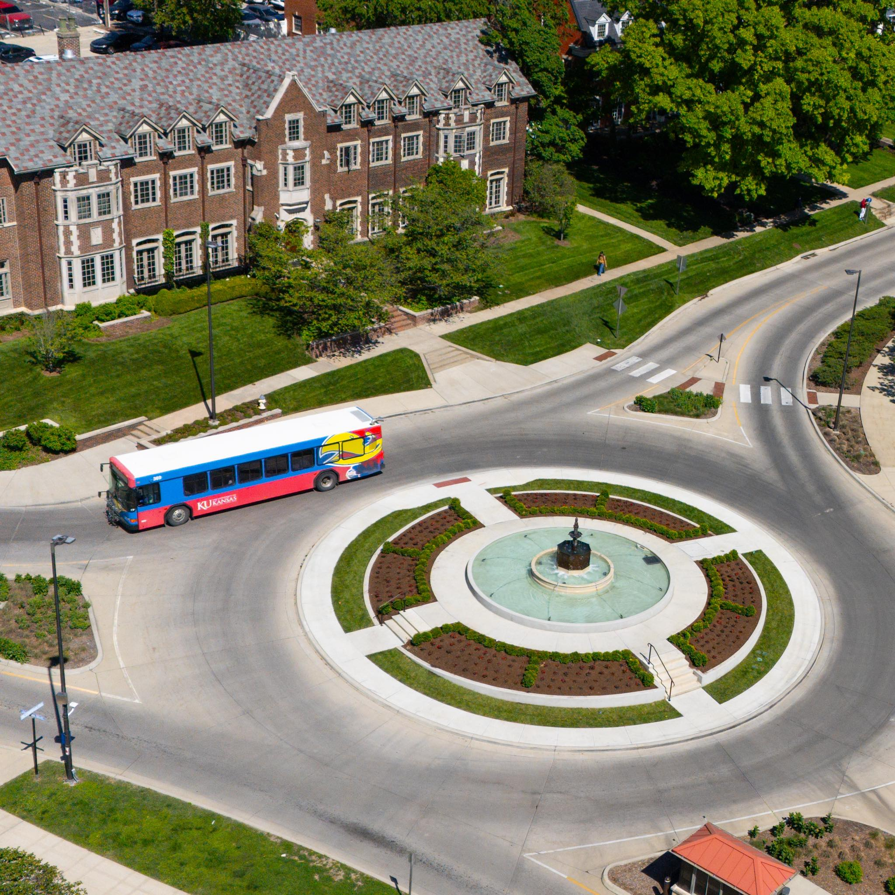

Latest Updates
View conferences →-
→PASCA 2.0
-
→Componentwise Linear Ideals and Herzog-Hibi-Ohsugi Conjecture
-
→CA+ Conference
Hello, I’m
I am Soumyadeep Misra, a Ph.D. candidate in Mathematics at the University of Kansas ↗, working under the guidance of Prof. Hai Long Dao ↗. I am interested in commutative algebra and its interactions with combinatorics, especially Stanley–Reisner theory and graph-theoretic aspects. Prior to this, I completed my Master of Science in Mathematics at the Indian Institute of Technology Madras ↗, and my Bachelor of Science in Mathematics at St Xavier's College, Kolkata ↗.
Research at the interface of algebraic invariants and combinatorial structures.

Explore my work in commutative algebra and combinatorial structures.
→ □Preprints, working manuscripts, and academic projects.
→ πCourses, recitations, and classroom experience.
→ ⌁Workshops and academic events in algebra and related fields.
→ ⊂Seminar presentations, webinars, and expository talks.
→ ✦Conference notes, seminar notes, and mathematical writing.
→
Featured research direction
I am interested in how algebraic invariants of ideals reflect combinatorial information coming from simplicial complexes, graphs, and monomial ideals.
Learn more →